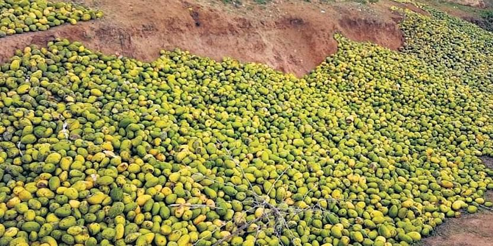

We are a group of people with Lot's of experience in growing and selling mangoes. We know what a good mango looks like and how they are grown. This essential fruit requires a temperate climate, loamy soil that is reach in organic matter apart from needing proper drainage and aeration facilities. Lucky for us we live in Ratnagiri which is proudly known as kingdom of mangoes is also home to temperate fruits like Mango for which the state is very famous across globel. The main factor which influence temperate fruit bearing trees is soil, climate and environment which are highly favorable and unparalleled in the province of Ratnagiri. ratnagiri Mangos a unique look, taste, flavor, size and color.It's very healthy for Everyone.
Yellow Devgad Alphonso Mango pleasant fruity smell, no fiber, extremely aromatic and sweet taste, becoming popular among buyers
Yellow ratnagiri alphonso mango has a rich, creamy sweet pulp and tender texture with shallow fiber content and delicate, superior, delightful fruit.

Frozen Totapuri Mango known for its great taste and texture, and can be used in juices, puddings, ice creams, bakery fillings etc.
Red Kesar mango medium-sized and shaped like an oblong. It has a red mush on its shoulders most of the time. Kesars taste great and are sweet. They can be used to make pulp, juice, nectars, squashes, jams, and concentrates, among other things.
Nidhish Ratnagiri Mango is The Mangoes are naturally ripened and are chemical free. and it is veary healthy and Teasty.
Yellow Alphanso Mango the fruit matures, the skin of an Alphonso mango turns golden-yellow with a tinge of red across the top of the fruit. The fruits generally weigh between 150 and 300 grams

We deliver fresh Mangos with a 100% guarantee of freshness.

We deliver your orders as fast as possible, delivery procedure begins as soon as Mango is plucked from tree.